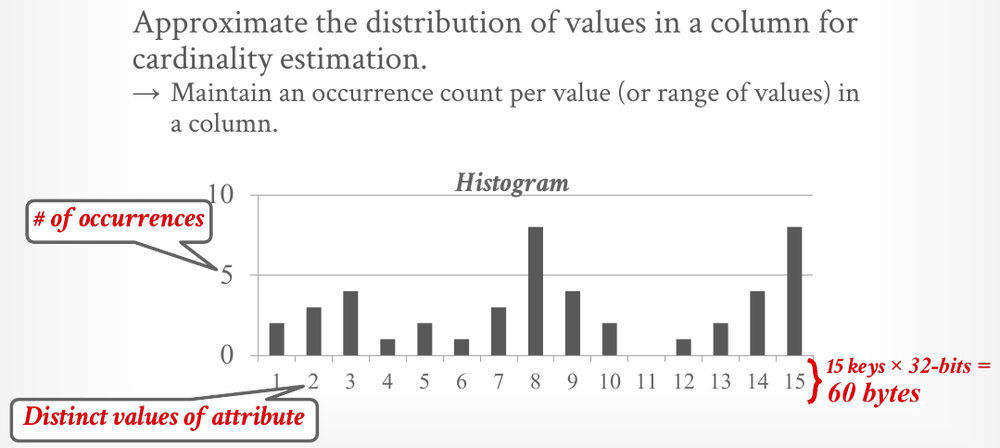
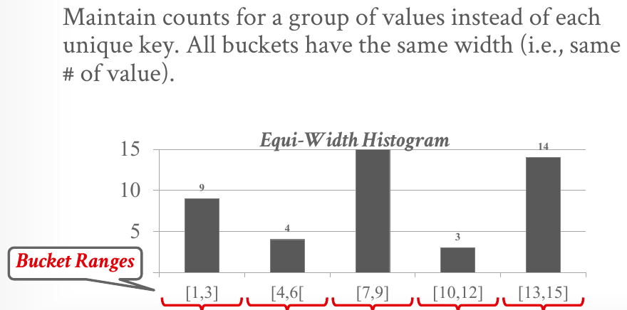
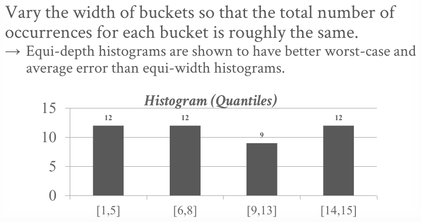
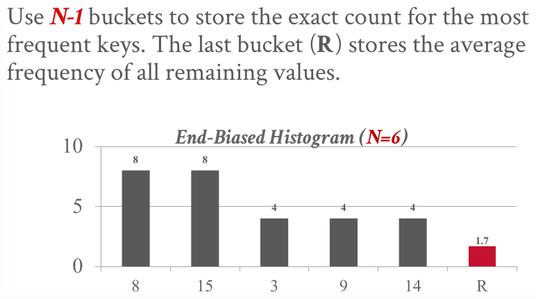
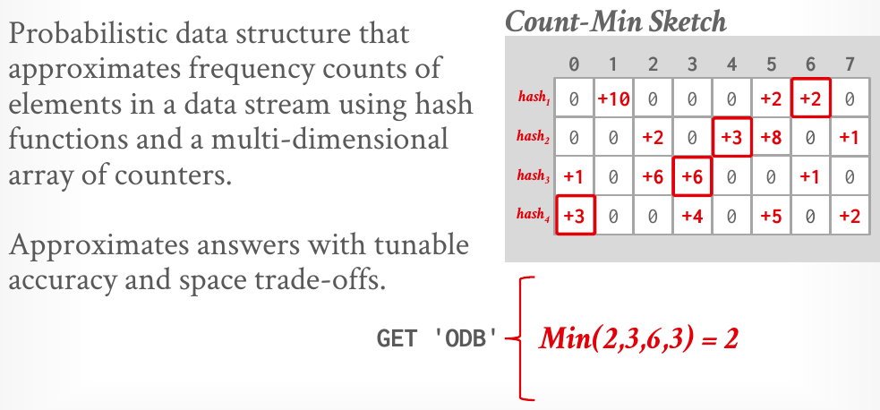
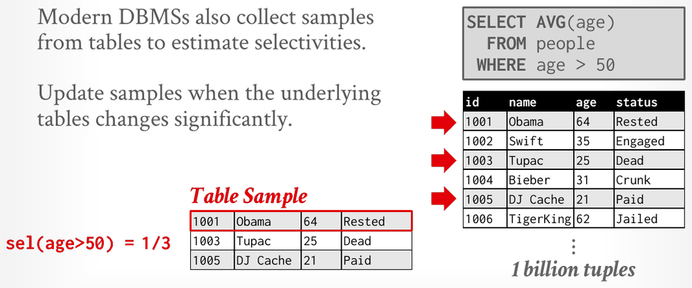
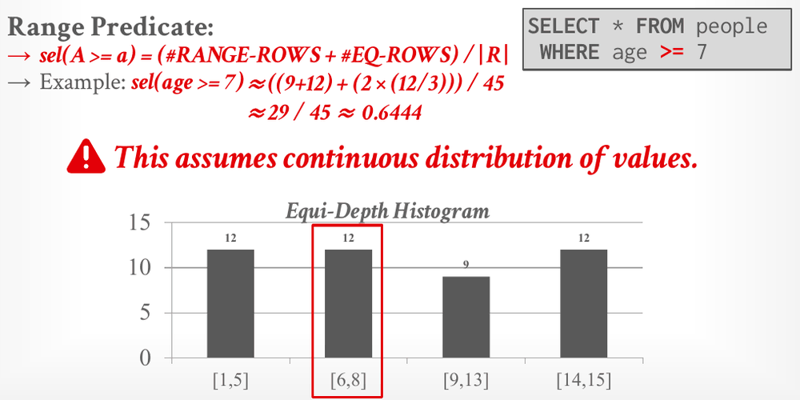

Database Internals in Go · Unit 5 · Lesson 8
Query Optimization II: Statistics and Cardinality Estimation
Estimate how many rows a filter or a join will produce from histograms, sketches and samples, using the uniformity, independence and containment assumptions, and recognize when those assumptions make the estimate wrong.
Lesson 7's cost-based optimizer picks the plan with the lowest estimated cost. Every cost formula from Lessons 1 to 4 needs the size of its inputs, and above the leaves those inputs are the outputs of other operators, which nobody has run yet. Lecture #16 is about how a DBMS estimates those sizes: what statistics it keeps, how it summarizes a column, and the formulas that turn summaries into row counts. BusTub keeps no statistics, so this lesson is theory, and it carries most of HW4: three parts of Question 2 and all of Question 3.
Unit 5, Lesson 6: which pairing of a process model with one of its properties is right?
Unit 3, Lesson 6: a Bloom filter lookup for key x returns true. What can the DBMS conclude?
Unit 5, Lesson 5: a page's zone map for column val says MIN = 100, MAX = 400, COUNT = 5. For which query must a scan still read the page?
Cost models
Slide 12 states the problem. We have cost formulas for each operator algorithm, but we also need the size of each operator's output, and that depends on its input. In the Emp/Dept plan from Lesson 7, every edge between operators is a "???".
A cost model predicts how a query plan will behave in a given database state. Its result is an internal cost, meaningful only for comparing one plan with another, and the DBMS needs a model because running every possible plan to find out is far too expensive. Slide 14 gives two kinds of cost:
- Physical costs predict CPU cycles, I/O, cache misses, RAM use and network messages. They depend heavily on the hardware.
- Logical costs estimate the output size of each operator. They are independent of the operator's algorithm, and they need estimates of operator result sizes.
PostgreSQL's cost model combines CPU and I/O costs, weighted by "magic" constant factors whose defaults assume a disk-resident database without much memory: processing a tuple in memory is 400× faster than reading a tuple from disk, and sequential I/O is 4× faster than random I/O.
#16 Query Planning & Optimization II, "Cost models" (29:19), slides 12–15: why output sizes are needed, physical and logical costs, and PostgreSQL's constants.
Statistics in the catalog
The estimates come from statistics: auxiliary data structures the DBMS fills by scanning the database, so that the optimizer can approximate the data's contents. Each kind trades accuracy, efficiency, memory use, coverage, and the cost of building and maintaining it. Most DBMSs keep statistics in the internal catalog and refresh them through one or more triggers: periodic background tasks (PostgreSQL's autovacuum), maintenance schedules (Oracle), modification thresholds, or a manual command such as ANALYZE or UPDATE STATISTICS.
Most DBMSs build statistics for each column on its own. Some can also track groups of columns together, so they don't have to treat the columns as independent: SQL Server does this automatically for columns used together in an index, and otherwise a person names the columns. Db2 calls these column group statistics and Oracle calls them extended statistics. The Honda Accord example below shows why they matter.
Slide 19 lists four ways to summarize a column: histograms (most common), sketches (increasing usage), sampling (rare), and a trained ML model (experimental, very rare).
#16 Query Planning & Optimization II, "Statistics storage" (35:18), slides 16–18: what statistics trade off, where they live, how they are refreshed, and column-group statistics.
Histograms
A histogram keeps an occurrence count per value, or per range of values, in a column. Every example in this lesson uses the same column (call it age): values 1 to 15 with 45 tuples in total.

One count per distinct value is exact, but a column with millions of distinct values would need millions of counts. The notes put the problem this way: real data is often skewed, but storing every value is expensive. The cheaper histograms group values into buckets:
- An equi-width histogram keeps one count per group of values, and all buckets have the same width (the same number of values).
- An equi-depth histogram varies the bucket widths so that every bucket holds roughly the same number of occurrences. Slide 22 says equi-depth histograms have been shown to have better worst-case and average error than equi-width ones.
- An end-biased histogram with N buckets uses N − 1 buckets for the exact counts of the most frequent keys, and the last bucket, R, for the average frequency of all the remaining values.



Sketches
Exact statistics are expensive to maintain. A sketch is a probabilistic data structure that gives an approximate answer with a known error bound. Slide 24 names one per question: frequent items (count-min sketch), count distinct (HyperLogLog), and quantiles (t-digest). Apache DataSketches and Google's ZetaSketch are open-source implementations.
A count-min sketch approximates how often each value occurs in a stream with a few hash functions and a two-dimensional array of counters, one row per hash function. Inserting a value adds 1 to one counter in every row, the counter its row's hash picks. To read a value's count, look at its counter in every row and take the minimum.

The minimum is the right answer because counters only grow: every insert of 'ODB' added 1 to each of its four counters, so each one is at least the true count. Collisions with other values can only push a counter higher, so the smallest counter is the tightest of four overestimates. It is the same one-sided error as Unit 3's Bloom filter: a Bloom filter can say "present" wrongly but never "absent" wrongly, and a count-min sketch can overcount but never undercount. More rows and columns buy accuracy with space.
HyperLogLog estimates the number of distinct values in a multiset with a fixed array of m counters. To add a value, hash it; some of the hash's bits choose a counter, and the counter keeps the largest position of the leftmost 1-bit seen so far in the remaining bits. The estimate is the harmonic mean across the counters, corrected by a "fudge factor".
Sampling
Instead of summarizing a column ahead of time, the DBMS can execute the predicate on a random sample of the table and use the fraction that qualifies. The sample's size depends on the size of the table. Slide 27 gives two ways to keep one: maintain a read-only copy that is refreshed periodically, or sample the real tables, at the risk of reading several versions of the same logical tuple. The notes say a sample is refreshed when the changes to its table pass a threshold, such as 10% of the tuples.

HW4's official solution compares the two main approaches. Histograms struggle with skewed data, because the bucket boundaries have to be right. A sample doesn't depend on predefined buckets, so it can estimate the selectivity of any predicate, provided the sample represents the data well. Sampling is slower than reading a histogram, though, and none of this depends on the column's data type. Slide 19 still marks histograms as the most common approach and sampling as rare.
Selectivity of a filter
Cardinality estimation means estimating the number of rows an operator will produce. Slide 29 names the three estimates an optimizer must support: selection conditions (filters), join sizes, and distinct values. For each table R the DBMS keeps NR, the number of tuples in R, and V(A,R), the number of distinct values of attribute A. From those it derives the selection cardinality SC(A,R) = NR / V(A,R), the average number of tuples per value of A.
The selectivity sel(P) of a predicate P is the fraction of tuples that satisfy it, and the estimated output of a filter is NR × sel(P). For an equality, sel(A = constant) = occurrences / |R|. With the exact histogram, sel(age = 9) = 4/45 ≈ 0.089 (the slide truncates it to 0.088). The equi-depth histogram only knows that bucket [9,13] holds 9 tuples over 5 values, so it estimates (9/5)/45 ≈ 0.04, about half the true value, because 9 is a local peak inside its bucket. That estimate rests on the first assumption:
- Uniform data: within a histogram bucket, values (except for the heavy hitters) are equally frequent.
Selectivity is a fraction, so a predicate that matches few tuples has a low selectivity. HW4 Q2(b), quizzed in Lesson 5, calls OR predicates that "retrieve a few tuples" "high selectivity", the opposite usage. Saying a predicate is "highly selective" or "matches few tuples" avoids the clash.
The other single-predicate rules:
- A range adds the buckets fully inside the range to the matching share of the bucket the range starts in: sel(A ≥ a) = (#RANGE-ROWS + #EQ-ROWS) / |R|.
- A negation is the complement: sel(not P) = 1 − sel(P). For sel(age ≠ 2), bucket [1,5] gives sel(age = 2) ≈ (12/5)/45 ≈ 0.053, so sel(age ≠ 2) ≈ 0.95. Slide 34 notes that selectivity behaves like a probability, and the formulas for combining predicates follow from that.
- On a unique key, an equality matches at most one tuple. The notes call this the easy case, and HW4 uses it.

Combining predicates
For WHERE age = 2 AND name LIKE 'A%', with sel(age = 2) ≈ 0.053 and sel(name LIKE 'A%') ≈ 0.1, the two attributes have their own distributions, and the optimizer needs a rule to combine them. That is the second assumption:
- Independent predicates: the selectivity of a conjunction is the product of the predicates' selectivities.
So sel(P1 ∧ P2) = sel(P1) × sel(P2) ≈ 0.053 × 0.1 ≈ 0.0053. A disjunction subtracts the overlap so that tuples matching both aren't counted twice: sel(P1 ∨ P2) ≈ sel(P1) + sel(P2) − sel(P1) × sel(P2) ≈ 0.053 + 0.1 − 0.0053 ≈ 0.1477, again assuming independence. Slide 37 adds that when there are several predicates, systems may diminish their weights to reduce underestimation.
Correlated columns break independence. Slide 39's example, from Guy Lohman: a database of cars with 10 makes and 100 models, queried with WHERE make = 'Honda' AND model = 'Accord'. Independence and uniformity give 1/10 × 1/100 = 0.001. But only Honda makes Accords, so the real selectivity is 1/100 = 0.01, ten times the estimate. Correlated predicates are underestimated, which is the problem column-group statistics address.
Join size
For a join, the question is how many tuples of S each tuple of R matches. The answer rests on the third assumption:
- Containment: the domains of the join keys overlap so that every key in the inner relation also exists in the outer table.
Take R ⋈ S on a shared attribute A that isn't a key of either table. Each R tuple matches about NS / V(A,S) tuples of S, giving NR × NS / V(A,S); counting from S's side gives NR × NS / V(A,R). The slide takes the smaller of the two:
estSize ≈ NR × NS / max(V(A,R), V(A,S))
When the join goes from a foreign key to the primary key it references, the result is simpler: every tuple of the referencing table matches exactly one tuple of the referenced table, so the join has as many rows as the referencing table. The general formula agrees, because the primary key's V equals its table's size and is the larger V.
Estimates feed into each other. In a plan joining A, B and C, the size of A ⋈ B is estimated from the base tables, and (A ⋈ B) ⋈ C is then estimated from that estimate, so an error at the bottom grows on the way up. The notes say errors "may cascade and amplify in subsequent operations", and slide 44 sums up the whole process as "fraught with errors". That is why HW4 Q2(g), in Lesson 7, refuses to promise that the cheapest estimated plan is the fastest one.
#16 Query Planning & Optimization II, "Estimating cardinality" (38:03), slides 19–43: one 43-minute chapter that runs to the end of the lecture. It covers histograms, sketches and sampling first (slides 19–28), then the selectivity formulas, the three assumptions and join size (slides 29–43).
BusTub has none of this
BusTub's optimizer keeps no histograms, sketches or samples. Its EstimatedCardinality reads a table's size from a suffix in its name, such as _1m or _100k, with the comment that this is the only way to get the table size because BusTub doesn't support statistics yet. Project 3's rules are heuristics, as Lesson 7 described. Unit 6 builds them.
Work it out: HW4 Question 3(b)
HW4 Question 3(b) gives four tables, assumes uniformity, and assumes perfect overlap: the distinct B values in R1 are the same as in R2, and likewise for C and the other shared attributes.
| Table | Tuples | Distinct values |
|---|---|---|
| R1(A, B) | N1 = 4,000 | V(A,R1) = 250, V(B,R1) = 500 |
| R2(B, C) | N2 = 8,000 | V(B,R2) = 500, V(C,R2) = 800 |
| R3(C, D), with D a foreign key to R4(D) | N3 = 16,000 | V(C,R3) = 800, V(D,R3) = 900 |
| R4(D, E), with D the primary key | N4 = 4,000 | V(D,R4) = 4,000, V(E,R4) = 1,200 |
Work each estimate out before opening the hints. The first item uses the slides' histogram instead.
-
What to think about
Which bucket holds 2 in each histogram, and what does each assume about the values inside that bucket?
The method
Equi-depth: 2 is in [1,5], so divide its count evenly over 5 values. End-biased: 2 isn't among the five exact keys, so it gets the R bucket's average.
The result
Equi-depth: 12 / 5 = 2.4. End-biased: 1.7. The true count is 3. Both histograms smooth value 2 toward its neighbours; the end-biased one is exact only for the heavy hitters 8, 15, 3, 9 and 14.
-
What to think about
What does it mean that D is R4's primary key?
The method
An equality on a unique key matches at most one tuple. The uniformity formula SC(D,R4) = N4 / V(D,R4) agrees.
The result
1. Official: R4.D is a primary key, so the optimizer estimates 1 tuple; 4,000 / 4,000 = 1 as well. The distractors 900 and 1,200 are V(D,R3) and V(E,R4).
-
What to think about
A isn't a key, so under uniformity every value of A appears equally often.
The method
Use the selection cardinality SC(A,R1) = N1 / V(A,R1), with the distinct count of A, not of B.
The result
4,000 / 250 = 16, as in the official solution. Dividing by V(B,R1) = 500 instead gives the distractor 8.
-
What to think about
It is easier to estimate C = 99 first and take the complement.
The method
sel(C = 99) = 1 / V(C,R3), and sel(not P) = 1 − sel(P). Multiply by R3's size, N3.
The result
16,000 − 16,000 / 800 = 16,000 − 20 = 15,980. The official solution prints the formula with N2, but the numbers are R3's, N3 = 16,000. The distractor 20 is the estimate for C = 99 itself.
-
What to think about
Two equality predicates on different columns of one table, combined with AND.
The method
Independence multiplies the selectivities: N2 × (1 / V(B,R2)) × (1 / V(C,R2)).
The result
8,000 / 500 / 800 = 0.02, as in the official solution. An estimate is an expected value, so it can be a fraction. Applying only one of the predicates gives the distractors 16 and 10.
The homework behind these questions
The questions marked HW4 come from CMU's Homework #4: Question 2 and Question 3, with the original figures. Work each one out on paper first, then click the option you got. The quiz tells you at once whether it matches CMU's official answer, and explains why. To compare your working step by step, open the official solutions for Question 2 and Question 3.
Check your understanding
HW4 Q2(j): which description fits an equi-depth histogram?
HW4 Q2(i) and Q2(k): a selection predicate's selectivity can be estimated from a histogram on its column or from a sample of the table. Which statement matches CMU's official solutions?
HW4 Q3(a): University(id, name, state, city) has 10,000 rows; 10% have state = 'PA' and 0.5% have city = 'Pittsburgh'. Under the uniformity and independence assumptions, what is the estimated cardinality of SELECT * FROM University WHERE state = 'PA' AND city = 'Pittsburgh' (rounded up), and is it likely an overestimate or an underestimate?
HW4 Q3(b)ii, with the tables above: estimate the number of tuples in the natural join R3 ⋈ R4.
HW4 Q3(b)vi and vii, with the tables above: estimate R1 ⋈ R2, and then R1 ⋈ R2 ⋈ R3, assuming the number of distinct C values is always 800.
Primary sources: CMU 15-445/645 Fall 2025 Lecture #16 slides 12–44 and notes (sections 2–3); Lecture #15 notes §6; Homework #4 Question 2(i), (j) and (k) and Question 3, with the official solutions; BusTub src/optimizer/ at commit d49b823; Lectures #09, #13 and #14 (warm-up).